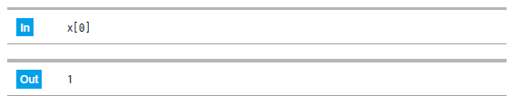
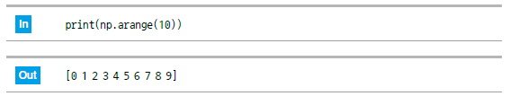
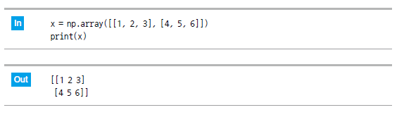

1. 이번 단원에서 배우는 것
데이터 분석에서는 대부분 외부 파일에서 데이터를 가져옵니다. 이 단원에서는 가장 단순한 텍스트 파일을 기준으로 파일을 열고, 쓰고, 읽고, 닫는 흐름을 이해합니다.
파일 쓰기파이썬에서 텍스트 파일을 생성합니다.
파일 읽기저장된 파일 내용을 다시 불러옵니다.
with 문파일을 안전하게 열고 자동으로 닫습니다.
glob여러 파일을 한 번에 찾습니다.
2. 파일 경로 이해하기
파일을 다루려면 먼저 파일이 어디에 있는지 알아야 합니다. 현재 노트북이 있는 폴더와 파일이 있는 폴더가 다르면 경로를 정확히 지정해야 합니다.
| 구분 | 의미 | 예시 |
|---|---|---|
| 상대 경로 | 현재 작업 폴더 기준 경로 | data/sample.txt |
| 절대 경로 | 드라이브부터 시작하는 전체 경로 | C:/dev/data/sample.txt |
초보자 주의: Windows 경로에서 역슬래시
\ 때문에 오류가 날 수 있으므로 수업에서는 / 사용을 권장합니다.3. 텍스트 파일 쓰기
open() 함수로 파일을 열고, write()로 내용을 저장할 수 있습니다. w 모드는 새로 쓰기 모드입니다.

file = open("memo.txt", "w", encoding="utf-8")
file.write("파이썬 파일 입출력 연습")
file.close()
핵심: 파일을 열었으면 마지막에
close()로 닫아야 합니다.4. 텍스트 파일 읽기
r 모드는 읽기 모드입니다. read()를 사용하면 파일 전체 내용을 문자열로 읽을 수 있습니다.

file = open("memo.txt", "r", encoding="utf-8")
content = file.read()
file.close()
print(content)
5. with 문 사용하기
with 문을 사용하면 파일을 사용한 뒤 자동으로 닫아줍니다. 실무에서는 open()과 close()를 직접 쓰는 방식보다 with 문을 더 많이 사용합니다.
with open("memo.txt", "r", encoding="utf-8") as file:
content = file.read()
print(content)
권장: 앞으로 파일을 다룰 때는 가능하면
with open(...) 구조를 사용하세요.6. 여러 줄 저장하기
여러 줄을 저장하려면 줄바꿈 문자 \n을 사용합니다.
lines = ["첫 번째 줄\n", "두 번째 줄\n", "세 번째 줄\n"]
with open("lines.txt", "w", encoding="utf-8") as file:
file.writelines(lines)
여러 줄을 읽을 때는 readlines()를 사용할 수 있습니다.
with open("lines.txt", "r", encoding="utf-8") as file:
lines = file.readlines()
print(lines)
7. glob으로 여러 파일 찾기
glob은 특정 패턴에 맞는 파일 목록을 찾을 때 사용합니다. 예를 들어 data 폴더 안의 모든 txt 파일을 찾을 수 있습니다.

glob을 사용하면 편리합니다.import glob
file_list = glob.glob("data/*.txt")
print(file_list)
8. 실습 체크리스트
- 파일 경로의 개념을 설명할 수 있다.
- 텍스트 파일을 새로 만들고 내용을 저장할 수 있다.
- 텍스트 파일을 읽어 화면에 출력할 수 있다.
with open()구조를 사용할 수 있다.glob으로 여러 파일 목록을 찾을 수 있다.
9. 종합 실습 문제
1. 문제 출제
오늘 배운 내용을 활용해 간단한 학습 메모 파일을 생성하고 다시 읽어오는 프로그램을 작성해 보세요.
- 파일명은
study_memo.txt로 합니다. - 메모 내용은 3줄 이상 저장합니다.
with open()을 사용합니다.- 저장한 파일을 다시 읽어서 화면에 출력합니다.
2. 문제 해결에 필요한 개념 요약
| 개념 | 활용 방법 |
|---|---|
| 쓰기 모드 | w 모드로 파일을 새로 만듭니다. |
| 읽기 모드 | r 모드로 파일을 읽습니다. |
| 줄바꿈 | \n으로 여러 줄을 표현합니다. |
| with 문 | 파일을 안전하게 열고 닫습니다. |
3. 수도코드
파일 이름을 정한다.
저장할 메모 내용을 문자열 또는 리스트로 준비한다.
쓰기 모드로 파일을 연다.
메모 내용을 파일에 저장한다.
읽기 모드로 같은 파일을 다시 연다.
파일 내용을 읽는다.
읽은 내용을 출력한다.
4. 실행 예시
예상 출력값은 다음과 같습니다.
오늘 배운 내용
1. 파일 쓰기
2. 파일 읽기
3. with 문 사용하기